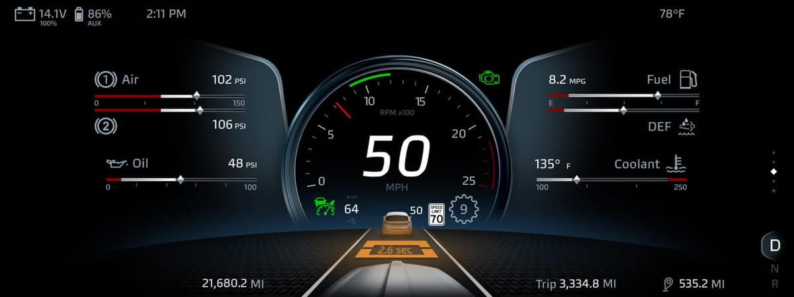
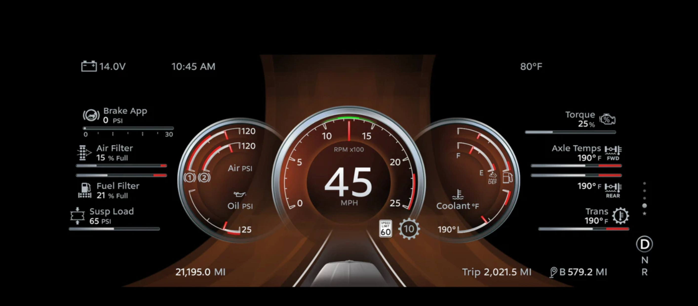
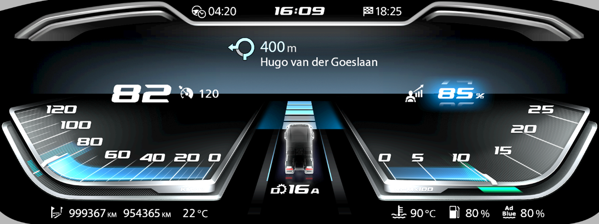

# PACCAR Trucks - Digital Instruments Cluster
Participated in the prototyping and development of the Kenworth T680 and Peterbilt 579 Digital Instruments Clusters. The unified and modular Paccar Digital HMI platform implements a wide range of driver assistance and system maintenance utilities - tailored to fit the design and functional requirements of various OEMs.

https://www.youtube.com/watch?v=KIWNLlrXyFs&t=14s

https://www.youtube.com/watch?v=jD15Y_Ldhn8
# DAF XF/XG Trucks - Digital Instruments Cluster
Participated in the prototyping and development of the DAF XF/XG Digital Instruments Cluster. The digital display was deployed in the next generation of DAF Trucks, in order to improve the safety, efficiency and maintenance of truck fleets.

https://www.youtube.com/watch?v=8Pfgj1tG5NU